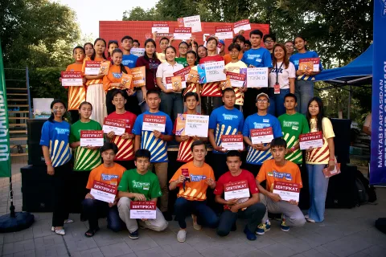
14 hudud, 1 harakat
Birinchi respublika bo‘ylab safarimiz startap ekotizimini bevosita hududlarga olib chiqdi: 1 500 dan ortiq o‘quvchi robototexnika, AI va fintech yo‘nalishlarida yechim yaratdi.
StartupFest ekotizimida bo‘lib o‘tayotgan tadbirlar, e’lonlar va ishtirokchilarimiz haqidagi foydali maqolalarni shu yerdan kuzatib boring.

Birinchi respublika bo‘ylab safarimiz startap ekotizimini bevosita hududlarga olib chiqdi: 1 500 dan ortiq o‘quvchi robototexnika, AI va fintech yo‘nalishlarida yechim yaratdi.
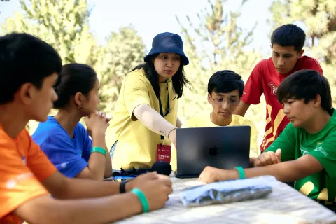
Ishtirokchilar sun’iy intellekt vositalari yordamida bir kun ichida ishlaydigan mahsulotni qanday yaratdi.

StartupFest yosh asoschilar uchun bilim, aloqa va hamfikrlarni bir joyga jamlaydi.
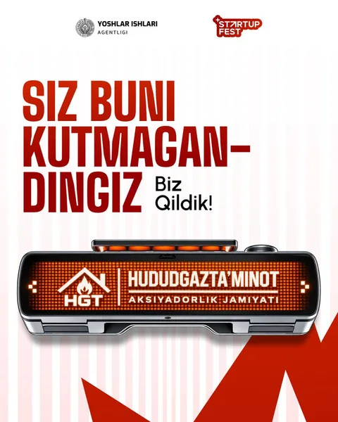
15-sentabr kuni Catalyst 4,5 million abonentga xizmat ko‘rsatuvchi kompaniya bilan yangi formatda o‘tdi: 30 dan ortiq ishtirokchi va 13 ta startap.
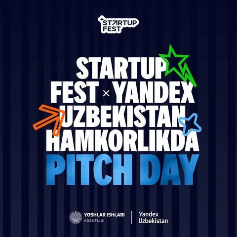
12-sentabr kuni Yandex Uzbekistan ofisida Catalyst Pitch Day bo‘lib o‘tdi: startaplar o‘z loyihalarini Yandex ekspertlari va investorlarga taqdim etishdi.
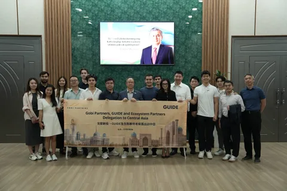
Osiyoning eng yirik venchur fondlaridan biri — Gobi Partners vakillari Yoshlar ishlari agentligiga tashrif buyurdi va O‘zbekiston startap ekotizimi bilan tanishdi.
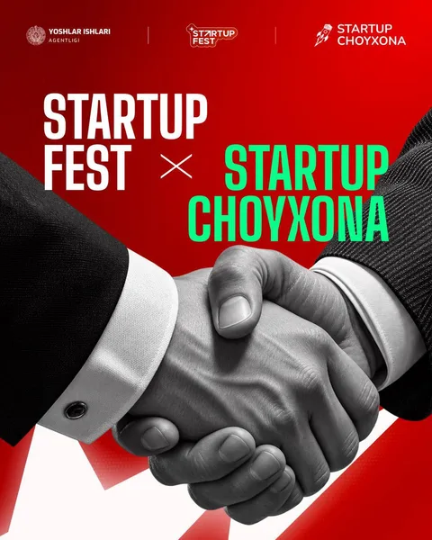
StartupFest jamoasi Startup Choyxona bilan media hamkorlik yo‘lga qo‘ydi — endi e’lonlar va imkoniyatlar yanada keng auditoriyaga yetib boradi.
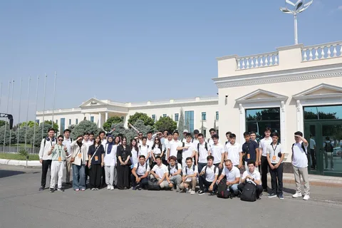
10-avgust kuni Catalyst dasturining ilk sanoat tashrifi IMZO fabrikasida bo‘lib o‘tdi: 50 nafar yosh, 10 ta jamoa va korxonaning real muammolari.
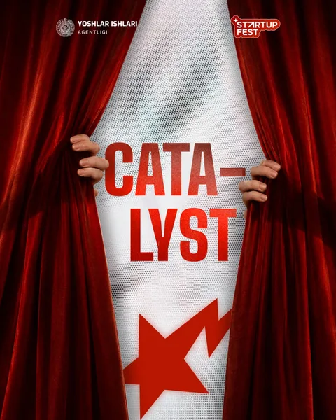
Catalyst — StartupFest’ning sanoat yo‘nalishi. Nazariy mashq emas: yirik korxonaning real muammosi, real mutaxassislari va real qaror qabul qiluvchilari.
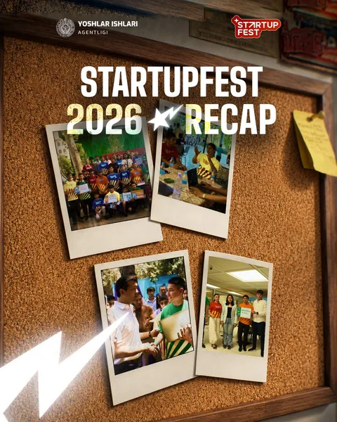
O‘zbekiston bo‘ylab 14 ta hududda o‘tkazilgan StartupFest yakunlandi: 6,891 ta ariza, 1,500 nafar ishtirokchi va 200 dan ortiq startup loyihasi.
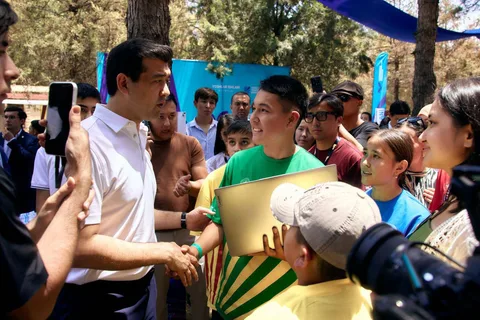
StartupFest ishtirokchisi bo‘lgan YADRO jamoasi haqida dunyodagi eng mashhur ochiq elektronika platformalaridan biri — Arduino o‘z rasmiy blogida maqola e’lon qildi.
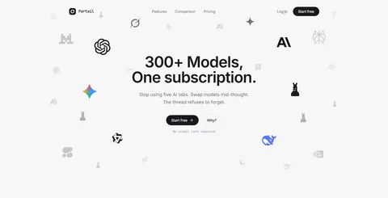
StartupFest’ning oldingi tadbirlarida ishtirok etgan founder Azizbek Eshimov o‘zining yangi loyihasi — Portail AI platformasini ishga tushirdi.